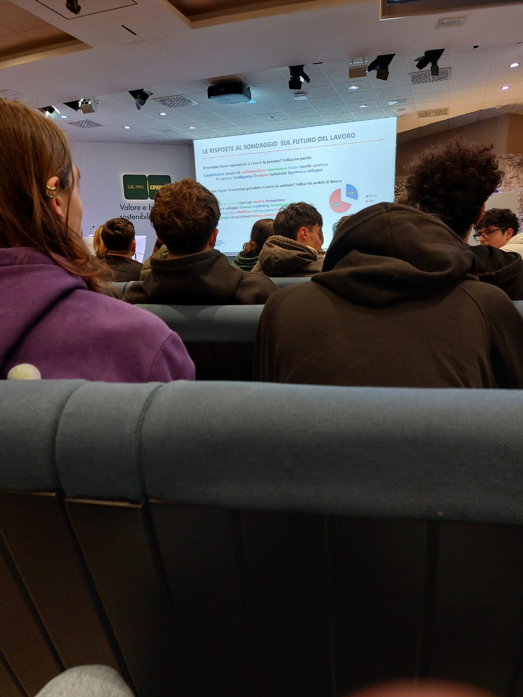

Cos'è
CNA Reggio Emilia è la sede locale della Confederazione Nazionale dell’Artigianato e della Piccola e Media Impresa, un’associazione che rappresenta e supporta artigiani, imprenditori, liberi professionisti e piccole e medie imprese del territorio.
Offre una vasta gamma di servizi che spaziano dalla consulenza aziendale, fiscale e legale, fino al supporto per l’avvio di nuove attività imprenditoriali. Aiuta inoltre le imprese a gestire la contabilità, il personale, la privacy e la sicurezza informatica, accompagnandole anche nei percorsi di digitalizzazione. Non mancano i servizi legati al credito e alla finanza, fondamentali per facilitare l’accesso a fondi, agevolazioni e finanziamenti.
L'incontro

Durante il primo incontro, il gruppo Credem si è presentato illustrandoci in modo chiaro e coinvolgente il funzionamento di una banca. Ci hanno spiegato le diverse aree operative, come il settore finanziario, il credito, la gestione del rischio, il marketing, e ci hanno fatto conoscere le figure professionali che vi lavorano ogni giorno.
Successivamente, sono intervenuti alcuni imprenditori che ci hanno raccontato le loro esperienze personali e professionali. Hanno parlato delle difficoltà iniziali, dei rischi affrontati e dei successi raggiunti con le loro start-up, tutte accomunate da un forte spirito di innovazione.
Oltre ai dirigenti aziendali, sono intervenuti anche alcuni impiegati delle risorse umane di diverse aziende, tra cui il gruppo Credem. Hanno condiviso con noi suggerimenti molto utili su come affrontare un colloquio di lavoro, come presentarsi al meglio, e quali atteggiamenti evitare. Inoltre, hanno messo in evidenza l’importanza delle soft skills, come la capacità di lavorare in gruppo, la comunicazione efficace, la flessibilità e la gestione del tempo, qualità fondamentali soprattutto per chi, come me, è ancora uno studente senza esperienze lavorative pregresse. Infine hanno mostrato i risultati del sondaggio che ci era stato sottoposto, che mostrava che idea abbiamo noi giovani sul mondo del lavoro e sull'innnovazione.
Commento
Competenze attivate
Trasversali
- Competenza in materia di consapevolezza ed espressione culturali
- Competenza imprenditoriale
Specifiche
- Conoscenza dei contratti aziendali: Comprendere le diverse tipologie di contratti di lavoro, le clausole principali e i diritti e doveri dei lavoratori
- Orientamento nel mercato del lavoro: Saper identificare le opportunità lavorative più adatte alle proprie competenze e interessi, e conoscere le dinamiche del mercato del lavoro locale
- Networking professionale: Sviluppare abilità di networking, imparando a costruire e mantenere relazioni professionali utili per la carriera
- Competenze pratiche: Acquisire competenze specifiche attraverso workshop e sessioni pratiche, come la redazione di un curriculum efficace, tecniche di colloquio, e l’uso di strumenti digitali per la ricerca di lavoro
- Conoscenza delle realtà aziendali locali: Approfondire la conoscenza delle aziende del territorio, comprendendo le loro esigenze, culture aziendali e opportunità di crescita professionale
- Capacità di adattamento: Sviluppare la capacità di adattarsi a diversi contesti lavorativi e di affrontare le sfide del mondo del lavoro con flessibilità e resilienza
La parte che ho trovato più interessante in assoluto durante questi incontri è stata quella dedicata ai consigli su come affrontare un colloquio di lavoro e su come presentarsi al meglio per fare una buona impressione.
Tuttavia, al di là di questo aspetto, il progetto nel suo complesso non mi ha coinvolto particolarmente. Ho avuto l’impressione che fosse pensato più per studenti di ambito economico o gestionale, piuttosto che per chi, come me, studia informatica. Durante gli incontri si è parlato molto di banche, finanza, aspetti legati al mondo dell’impresa e dell’economia; argomenti sicuramente interessanti, ma distanti dal mio percorso di studi. Proprio per questo motivo, in alcune occasioni ho fatto fatica a seguire e comprendere appieno i contenuti trattati.
Nonostante ciò, credo sia comunque stato utile poter entrare in contatto con realtà aziendali vere e con professionisti del settore, anche solo per iniziare a farsi un’idea di come funziona il mondo del lavoro e di quali competenze siano richieste.